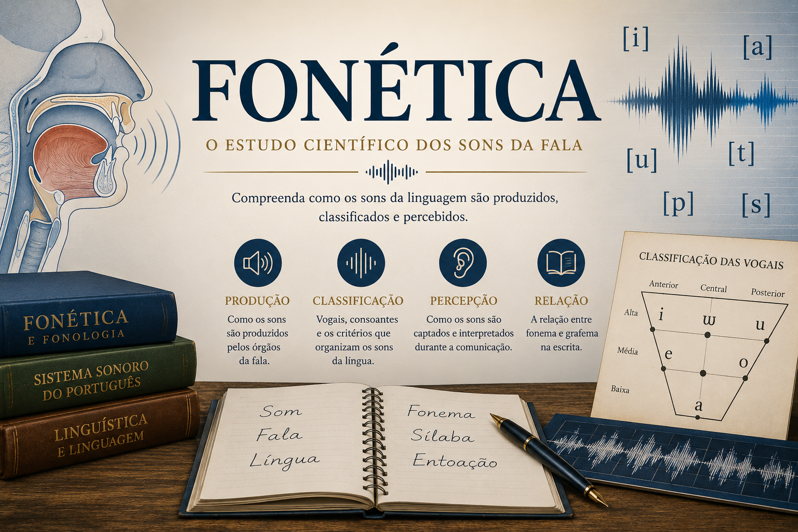

Introdução à Fonética: o que é, para que serve e como se relaciona com a fonologia
Entenda o que é Fonética, qual sua importância nos estudos linguísticos
e como ela se relaciona com a Fonologia no estudo dos sons da fala.
Fonética: estudo dos sons da fala na Língua Portuguesa
A Fonética é uma área da Linguística dedicada ao estudo dos sons da fala humana, considerando sua produção, articulação, percepção e características físicas.
No estudo da Língua Portuguesa, a fonética permite compreender como os sons são produzidos pelos órgãos da fala, como se classificam vogais e consoantes, de que modo se formam as sílabas e como se estabelece a relação entre fala e escrita.
Nesta seção do Mestre Kira, você encontrará conteúdos didáticos sobre fonética, fonologia, aparelho fonador, fonema, grafema, vogais, consoantes, consciência fonológica e fenômenos fonéticos do português brasileiro.

O que você encontrará nesta seção
- Introdução à Fonética e sua relação com a Fonologia;
- Órgãos da fala e aparelho fonador;
- Classificação dos sons da fala;
- Vogais e consoantes do português;
- Fenômenos fonéticos do português brasileiro;
- Relação entre fonema e grafema;
- Sílaba, leitura e escrita;
- Consciência fonológica e alfabetização;
- Fonética articulatória.
Os conteúdos são indicados para estudantes da educação básica, graduandos em Letras, professores de Língua Portuguesa, alfabetizadores, vestibulandos, concursandos e leitores interessados no funcionamento sonoro da linguagem.